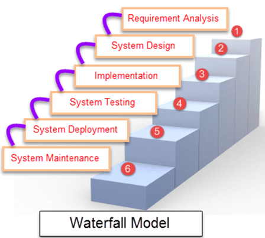
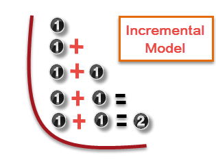
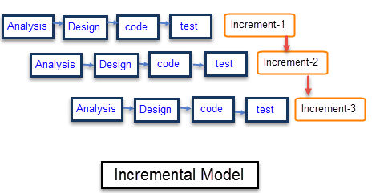

Waterfall Model is a sequential model that divides software development into pre-defined phases. Each phase
must be completed before the next phase can begin with no overlap between the phases. Each phase is designed
for performing specific activity during the SDLC phase. It was introduced in 1970 by Winston Royce.

When to use SDLC Waterfall Model?
Waterfall Methodology can be used when:
Requirements are not changing frequently
Application is not complicated and big
Project is short
Requirement is clear
Environment is stable
Technology and tools used are not dynamic and is stable
Resources are available and trained
Different phases
Activities performed in each stage
Requirement Gathering stage
Incremental Model is a process of software development where requirements are broken down into multiple
standalone modules of software development cycle. Incremental development is done in steps from analysis
design, implementation, testing/verification, maintenance.

Each iteration passes through the requirements, design, coding and testing phases. And each subsequent
release of the system adds function to the previous release until all designed functionality has been
implemented.

The system is put into production when the first increment is delivered. The first increment is often a core
product where the basic requirements are addressed, and supplementary features are added in the next
increments. Once the core product is analyzed by the client, there is plan development for the next
increment.
Characteristics of an Incremental module includes
System development is broken down into many mini development projects
Partial systems are successively built to produce a final total system
Highest priority requirement is tackled first
Once the requirement is developed, requirement for that increment are frozen
When to use Incremental models?
Requirements of the system are clearly understood
When demand for an early release of a product arises
When high-risk features and goals are involved
When software engineering team are not very well skilled or trained
Such methodology is more in use for web application and product based companies
the V model of testing was developed where for every phase, in the Development life cycle there is a
corresponding Testing phase
The left side of the model is Software Development Life Cycle – SDLC
The right side of the model is Software Test Life Cycle – STLC
The entire figure looks like a V, hence the name V – model
Apart from the V model, there are iterative development models, where development is carried in phases, with
each phase adding a functionality to the software. Each phase comprises its independent set of development
and testing activities.
Good examples of Development lifecycles following iterative method are Rapid Application Development, Agile
Development
Mis on agiilne meetod?
Agiilset tarkvaraprogrammi võib kirjeldada kui loetelu tarkvaraprogrammi lahendustest, millel on nii soove kui ka võimalusi, mis on välja arendatud, kasutades koostööd iseorganiseeruvate ja funktsionaalsete rühmade vahel.
See edendab adaptiivset planeerimist, evolutsioonilist arengut ja varajast edastamist teie väga iteratiivsetele ja järkjärgulistele lähenemisviisidele tarkvaraarendusele.
Millal hakati kasutama?
1990. aastate alguses lõid Ken Schwaber ja Jeff Sutherland Scrumi metoodika
Miks just agiilne meetod?
Agiilset tehnikat kasutanud ettevõtted saavad reageerida turudünaamikale ja seostada kõigi oma projektidega tõhusalt. Agiilsed koolitused on suurepärane viis nii ettevõtte kui ka projektirühma seadistamiseks agiilse ja ühendatud täitmismeetodi alustalades. Agiilsed koolitused võivad selgeks teha hulga müüte ja arusaamatusi seoses Agile protseduuridega. Samuti võib see toetada ja paljastada Agiilsete ideede põhialuseid ning selgitada erinevate teostuslahenduste erinevusi.
8 printsiipi
Keskendu ettevõtte vajadustele (Focus on the business need)
Tarni õigel ajal (Deliver on time)
Koostöö ('Collaborate')
Ära kunagi anna kvaliteedis järele (Never compromise quality)
Ehita järk-järgult (Build incrementally from firm foundations)
Tööta iteratiivselt (Develop iteratively)
Suhtle pidevalt ja selgelt (Communicate continuously and clearly)
Näita, et sul on asjade üle kontroll (Demonstrate control)
Feature Driven Development (FDD)
Näited agiilsest arengumudelist
Meeskonnad valivad ühe või kaks meetodit täielikult välja. Üks laialdasemalt kasutatavaid tehnikaid on Scrum ja XP, mis tavaliselt sulanduvad ideaalselt.
Scrum on paindliku alamhulk ja XP on lisaks ka paindlik meetod tarkvara korduvaks tegemiseks.
Spiral Model is a risk-driven software development process model. It is a combination of waterfall model and
iterative model. Spiral Model helps to adopt software development elements of multiple process models for
the software project based on unique risk patterns ensuring efficient development process.
Each phase of spiral model in software engineering begins with a design goal and ends with the client
reviewing the progress. The spiral model in software engineering was first mentioned by Barry Boehm in his
1986 paper.
The development process in Spiral model in SDLC, starts with a small set of requirement and goes through each
development phase for those set of requirements. The software engineering team adds functionality for the
additional requirement in every-increasing spirals until the application is ready for the production phase.
The below figure very well explain Spiral Model:
When to use Spiral Model?
A Spiral model in software engineering is used when project is large
When releases are required to be frequent, spiral methodology is used
When creation of a prototype is applicable
When risk and costs evaluation is important
Spiral methodology is useful for medium to high-risk projects
When requirements are unclear and complex, Spiral model in SDLC is useful
When changes may require at any time
When long term project commitment is not feasible due to changes in economic priorities
The Big bang model is focusing on all types of resources in software development and coding, with no or very
little planning. The requirements are understood and implemented when they come.
This model works best for small projects with smaller size development teams which are working together. It
is also useful for academic software development projects. It is an ideal model where requirements are
either unknown or final release date is not given.